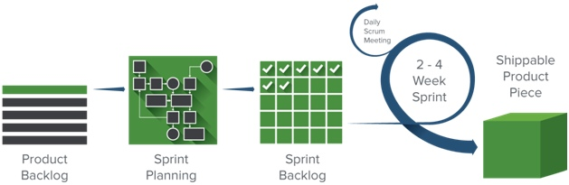
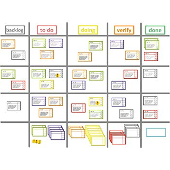
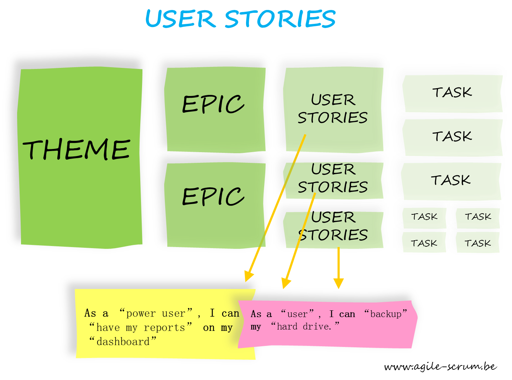
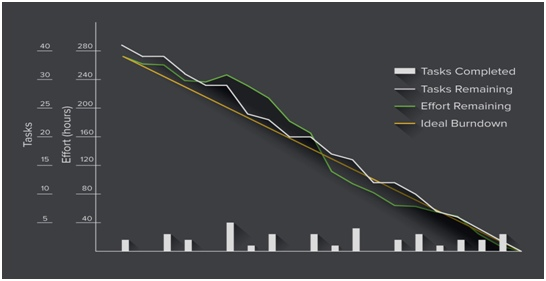
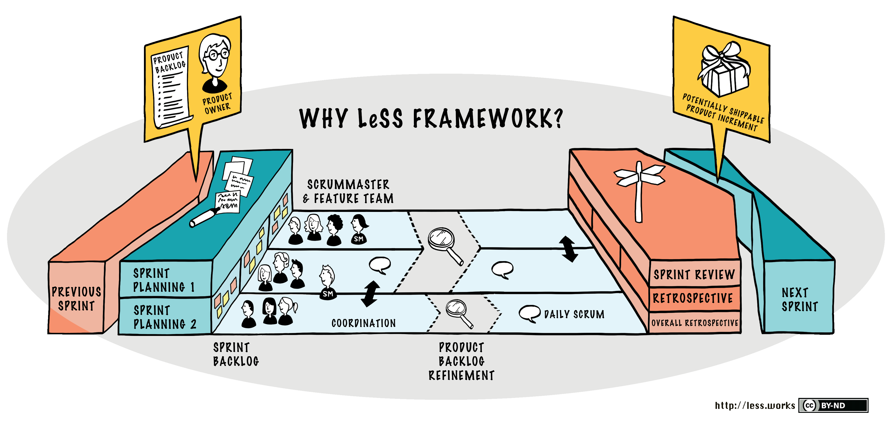
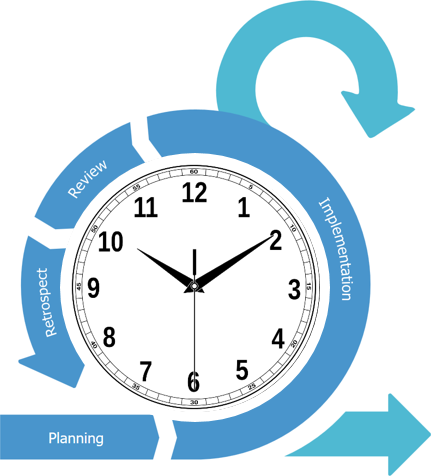
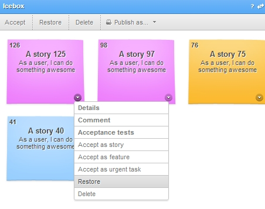

Scrum
project management methodology
Created by Denisenko Ekaterina
THE HISTORY AND ESSENCE OF SCRUM
Created by Jeff Sutherland in 1993.
Scrum an iterative software development model used to manage complex software and product development.
Scrum follows a set of roles, responsibilities, and meetings by using specially instruments that never change.
ADVANTAGES OF SCRUM
- More transparency and project visibility
- Increased team accountability
- Easy to accommodate changes
- Increased cost savings
DISADVANTAGES OF SCRUM
- Risk of scope creep
- Team requires experience and commitment
- The wrong Scrum Master can ruin everything
- Poorly defined tasks can lead to inaccuracies
ROLES IN SCRUM
- Product Owner
- Scrum Master
- Scrum Team

STEPS IN THE SCRUM PROCESS

TOOLS, ARTIFACTS, AND METHODS IN SCRUM
- Scrum board
- User stories
- Burndown chart
- Large-Scale Scrum (LeSS)
- Timeboxing
- Icebox
Scrum board
User stories
Burndown chart
Large-Scale Scrum (LeSS)
Timeboxing
Icebox
HOW AND WHEN TO WORK WITH SCRUM
Experts recommend using Scrum if:
- The project requirements will change and evolve
- Continuous feedback is required
- You have to figure out how to do a large part of the work because you haven't done it before
- You don’t need to commit to a fixed release date
- The project team wants autonomy
- You need to deliver software on a regular basis